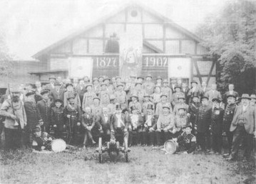

Schießsport
Training und Wettkämpfe verbinden sportlichen Anspruch mit verantwortungsvoller Präzision.
Großkaliber Schützengilde Eckartsberga e. V.
Sport. Gemeinschaft. Präzision.
Nächste Veranstaltung
Termine ansehen
Training · Wettkämpfe · Gemeinschaft
Vom Einsteiger bis zum erfahrenen Sportschützen – bei uns stehen Tradition, Präzision und Gemeinschaft im Mittelpunkt.
Mehr erfahrenTradition · Gemeinschaft · Mitmachen
Ob Einsteiger oder erfahrener Schütze – lernen Sie unseren Verein kennen und werden Sie Teil einer über 500-jährigen Tradition.
Jetzt informierenUnser Verein
Seit über 500 Jahren ist die Großkaliber Schützengilde Eckartsberga fester Bestandteil des gesellschaftlichen Lebens der Stadt. Wir verbinden gelebte Tradition mit modernem Schießsport und einer starken Gemeinschaft.
Training und Wettkämpfe verbinden sportlichen Anspruch mit verantwortungsvoller Präzision.
Vereinsleben und sportliche Begegnungen finden bei uns einen gemeinsamen Ort.
Der persönliche Austausch und verlässliche Verantwortlichkeiten tragen unsere Gemeinschaft.
Schützenkönige, Wettkampferfolge und besondere Leistungen gehören zu unserer Geschichte.
📜 Vereinsgeschichte
Vom Mittelalter bis heute begleitet die Geschichte der Schützengilde das Leben in Eckartsberga. Historische Bilder und überlieferte Erinnerungen machen die Entwicklung unseres Vereins über mehr als fünf Jahrhunderte sichtbar.
Veranstaltungschronik
Die Chronik bündelt kommende Veranstaltungen, vergangene Wettkämpfe, Ergebnisse, Bilder und Downloads in einer übersichtlichen Timeline.
Einblicke
Ausgewählte Aufnahmen verbinden die lange Geschichte des Vereins mit der Gegenwart in Eckartsberga.


Vereinsleben im Bild
Historische Motive und aktuelle Eindrücke erzählen gemeinsam von Tradition, Heimatverbundenheit und einem lebendigen Verein.
Mitmachen
Ob mit Erfahrung oder ganz am Anfang: Wer sich für den Schießsport und unser Vereinsleben interessiert, ist eingeladen, die GSG Eckartsberga bei einer kommenden Veranstaltung kennenzulernen.
Kommende Termine ansehen